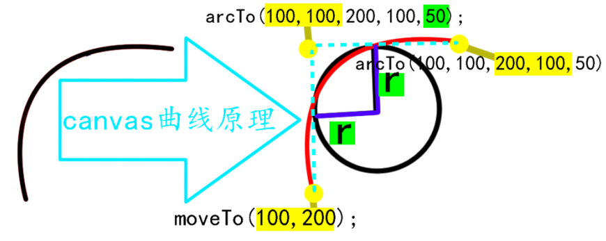
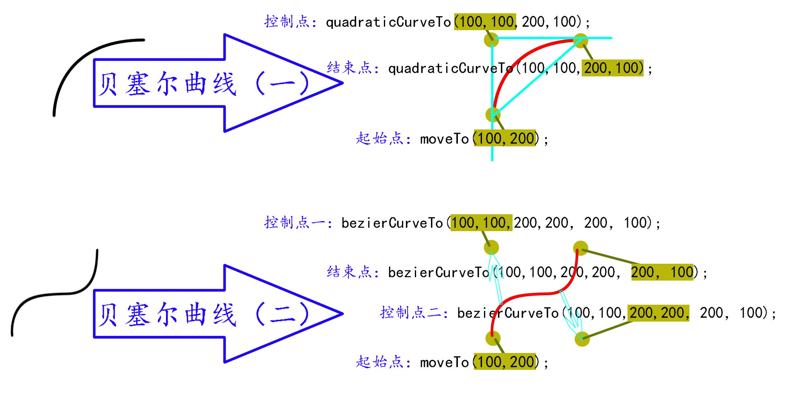

1.绘制圆：
圆的起始位置在右，90度在下，-90度在上，正负180度在左
语法:
arc（起始位置x，起始位置y，半径，起始弧度，结束弧度，旋转方向）；【例：
arc（200，200，150，0，90*Math.PI/180，false）；】
弧度：角度*Math.PI/180【例: 90*Math.PI/180】
旋转方向取值：false（顺时针），true（逆时针）
实例【画一个黑色实心圆】：
canvasContext.beginPath();
canvasContext.arc(200,200,50,0,360*Math.PI*180,false);
canvasContext.closePath();
canvasContext.fill();
2.绘制曲线：
1.arcTo(x1,y1,x2,y2,r);//第一组坐标、第二组坐标、半径

2.quadraticCurveTo(dx，dy，x1，y1)//贝塞尔曲线(一)：第一组控制点，第二组结束坐标
3.bezierCurveTo(dx1，dy1，dx2，dy2，x1，y1)//贝塞尔曲线（二）：第一组控制点，第二组控制点，第三组结束坐标


3.位移、旋转、放大/缩放
1. translate（x，y）；//位移
2. rotate（角度*Math.PI/180）；//旋转
3. scale（x轴比例，y轴比例）；//放大/缩放
4.案例【旋转、伸缩方块】代码：
< script >
window.onload=function(){
var huabu=document.getElementById("c1");
var canvasObj=huabu.getContext("2d");
canvasObj.translate(200,200);
var num=0;
var num2=0;
value=1;
setInterval(function(){
num++;
num2+=value;
if(num2==100){
value=-1;
}else if(num2==0){
value=1;
}
canvasObj.save();
canvasObj.clearRect(-200,-200,400,400);
canvasObj.scale(num2/50,num2/50);
canvasObj.rotate(num*Math.PI/180);
canvasObj.translate(-50,-50);
canvasObj.fillRect(0,0,100,100);
canvasObj.restore();
},30)
}
< /script >
案例注意点：
1. 注意书写顺序：比如：translate（）最先写固定位置，然后rotate（）旋转动作，最后绘制出图形fillRect（）
2. 当然translate（x，y）位移定位到某个位置时，clearRect的起始位置也是从这里开始clearRect（x，y，width，height）
3. translate（）写在translate（）后面代表再一次位移；而translate（）写在rotate（）后面代表改变旋转的中心支点【例如：默认支点在方块的左上角rotate（num*Math.PI/180）,可让方块往左上位移，中心旋转支点位置不变，这样就能达到改变旋转的中心支点的效果rotate（num*Math.PI/180）；translate（-50，-50）；】
4. setInterval(function（）｛num++…｝30),num++后的有关旋转动作num变量的内容，要包裹在save（）和restore（）之间，否者num++会叠加上一次num++的值
5. num++有一种等效的写法效果【灵活运用】：var num=0； var value=1； num+=value；
if（num==maxValue）｛value=-1；｝else if（num==minValue）｛value=1｝；//可达到最大值为maxValue时num--，最小值为minValue是num++的效果
6.注意旋转rotate（）和缩放scale（）的前后顺序，将会出现不同的效果